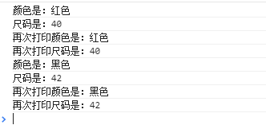
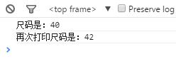

发布订阅模式介绍
发布订阅模式又叫观察者模式，它定义了对象间的一种一对多的关系，让多个观察者对象同时监听某一个主题对象，当一个对象发生改变时，所有依赖于它的对象都将得到通知。
现实生活中的发布-订阅模式；
比如小红最近在淘宝网上看上一双鞋子，但是呢 联系到卖家后，才发现这双鞋卖光了，但是小红对这双鞋又非常喜欢，所以呢联系卖家，问卖家什么时候有货，卖家告诉她，要等一个星期后才有货，卖家告诉小红，要是你喜欢的话，你可以收藏我们的店铺，等有货的时候再通知你，所以小红收藏了此店铺，但与此同时，小明，小花等也喜欢这双鞋，也收藏了该店铺；等来货的时候就依次会通知他们；
在上面的故事中，可以看出是一个典型的发布订阅模式，卖家是属于发布者，小红，小明等属于订阅者，订阅该店铺，卖家作为发布者，当鞋子到了的时候，会依次通知小明，小红等，依次使用旺旺等工具给他们发布消息；
发布订阅模式的优点：
支持简单的广播通信，当对象状态发生改变时，会自动通知已经订阅过的对象。
比如上面的列子，小明，小红不需要天天逛淘宝网看鞋子到了没有，在合适的时间点，发布者(卖家)来货了的时候，会通知该订阅者(小红，小明等人)。
发布者与订阅者耦合性降低，发布者只管发布一条消息出去，它不关心这条消息如何被订阅者使用，同时，订阅者只监听发布者的事件名，只要发布者的事件名不变，它不管发布者如何改变；同理卖家（发布者）它只需要将鞋子来货的这件事告诉订阅者(买家)，他不管买家到底买还是不买，还是买其他卖家的。只要鞋子到货了就通知订阅者即可。
对于第一点，我们日常工作中也经常使用到，比如我们的ajax请求，请求有成功(success)和失败(error)的回调函数，我们可以订阅ajax的success和error事件。我们并不关心对象在异步运行的状态，我们只关心success的时候或者error的时候我们要做点我们自己的事情就可以了~
发布订阅模式的缺点：
- 创建订阅者需要消耗一定的时间和内存。
- 虽然可以弱化对象之间的联系，如果过度使用的话，反而使代码不好理解及代码不好维护等等
如何实现发布–订阅模式？
- 首先要想好谁是发布者(比如上面的卖家)。
- 然后给发布者添加一个缓存列表，用于存放回调函数来通知订阅者(比如上面的买家收藏了卖家的店铺，卖家通过收藏了该店铺的一个列表名单)。
- 最后就是发布消息，发布者遍历这个缓存列表，依次触发里面存放的订阅者回调函数。
我们还可以在回调函数里面添加一点参数，比如鞋子的颜色，鞋子尺码等信息；
我们先来实现下简单的发布-订阅模式；代码如下：
1 2 3 4 5 6 7 8 9 10 11 12 13 14 15 16 17 18 19 20 21 22 23 24 25 26 27
| var shoeObj = {}; shoeObj.list = []; shoeObj.listen = function(fn) { shoeObj.list.push(fn); } shoeObj.trigger = function(){ for(var i = 0,fn; fn = this.list[i++];) { fn.apply(this,arguments); } } shoeObj.listen(function(color,size){ console.log("颜色是："+color); console.log("尺码是："+size); }); shoeObj.listen(function(color,size){ console.log("再次打印颜色是："+color); console.log("再次打印尺码是："+size); }); shoeObj.trigger("红色",40); shoeObj.trigger("黑色",42);
|

打印如上截图，我们看到订阅者接收到发布者的每个消息，但是呢，对于小红来说，她只想接收颜色为红色的消息，不想接收颜色为黑色的消息，为此我们需要对代码进行如下改造下，我们可以先增加一个key，使订阅者只订阅自己感兴趣的消息。
1 2 3 4 5 6 7 8 9 10 11 12 13 14 15 16 17 18 19 20 21 22 23 24 25 26 27 28 29 30 31 32 33 34 35 36 37
| var shoeObj = {}; shoeObj.list = []; shoeObj.listen = function(key,fn) { if(!this.list[key]) { this.list[key] = []; } this.list[key].push(fn); } shoeObj.trigger = function(){ var key = Array.prototype.shift.call(arguments); var fns = this.list[key]; if(!fns || fns.length === 0) { return; } for(var i = 0,fn; fn = fns[i++]; ) { fn.apply(this,arguments); } }; shoeObj.listen('red',function(size){ console.log("尺码是："+size); }); shoeObj.listen('block',function(size){ console.log("再次打印尺码是："+size); }); shoeObj.trigger("red",40); shoeObj.trigger("block",42);
|
上面的代码，我们再来运行打印下 如下：

可以看到，订阅者只订阅自己感兴趣的消息了；
发布—订阅模式的代码封装
我们知道，对于上面的代码，小红去买鞋这么一个对象shoeObj 进行订阅，但是如果以后我们需要对买房子或者其他的对象进行订阅呢，我们需要复制上面的代码，再重新改下里面的对象代码；为此我们需要进行代码封装；
如下代码封装：
1 2 3 4 5 6 7 8 9 10 11 12 13 14 15 16 17 18 19 20 21
| var event = { list: [], listen: function(key,fn) { if(!this.list[key]) { this.list[key] = []; } this.list[key].push(fn); }, trigger: function(){ var key = Array.prototype.shift.call(arguments); var fns = this.list[key]; if(!fns || fns.length === 0) { return; } for(var i = 0,fn; fn = fns[i++];) { fn.apply(this,arguments); } } };
|
我们在定义一个initEvent函数，这个函数使所有的普通对象都具有发布订阅功能，如下代码：
1 2 3 4 5 6 7 8 9 10 11 12 13 14 15 16 17 18 19 20 21
| var initEvent = function(obj) { for(var i in event) { obj[i] = event[i]; } }; var shoeObj = {}; initEvent(shoeObj); shoeObj.listen('red',function(size){ console.log("尺码是："+size); }); shoeObj.listen('block',function(size){ console.log("再次打印尺码是："+size); }); shoeObj.trigger("red",40); shoeObj.trigger("block",42);
|
如何取消订阅事件？
比如上面的列子，小红她突然不想买鞋子了，那么对于卖家的店铺他不想再接受该店铺的消息，那么小红可以取消该店铺的订阅。
如下代码：
1 2 3 4 5 6 7 8 9 10 11 12 13 14 15 16 17 18
| event.remove = function(key,fn){ var fns = this.list[key]; if(!fns) { return false; } if(!fn) { fn && (fns.length = 0); }else { for(var i = fns.length - 1; i >= 0; i--) { var _fn = fns[i]; if(_fn === fn) { fns.splice(i,1); } } } };
|
测试代码如下：
1 2 3 4 5 6 7 8 9 10 11 12 13 14 15 16 17 18 19
| var initEvent = function(obj) { for(var i in event) { obj[i] = event[i]; } }; var shoeObj = {}; initEvent(shoeObj); shoeObj.listen('red',fn1 = function(size){ console.log("尺码是："+size); }); shoeObj.listen('red',fn2 = function(size){ console.log("再次打印尺码是："+size); }); shoeObj.remove("red",fn1); shoeObj.trigger("red",42);
|
运行结果如下：

全局–发布订阅对象代码封装
我们再来看看我们传统的ajax请求吧，比如我们传统的ajax请求，请求成功后需要做如下事情：
- 渲染数据。
- 使用数据来做一个动画。
那么我们以前肯定是如下写代码：
1 2 3 4
| $.ajax(“http: rendedData(data); doAnimate(data); });
|
假如以后还需要做点事情的话，我们还需要在里面写调用的方法；这样代码就耦合性很高，那么我们现在使用发布-订阅模式来看如何重构上面的业务需求代码；
1 2 3 4 5 6 7 8 9 10 11
| $.ajax(“http: Obj.trigger(‘success’,data); }); Obj.listen(“success”,function(data){ renderData(data); }); Obj.listen(“success”,function(data){ doAnimate(data); });
|
为此我们可以封装一个全局发布-订阅模式对象；如下代码：
1 2 3 4 5 6 7 8 9 10 11 12 13 14 15 16 17 18 19 20 21 22 23 24 25 26 27 28 29 30 31 32 33 34 35 36 37 38 39 40 41 42 43 44 45 46 47 48 49
| var Event = (function(){ var list = {}, listen, trigger, remove; listen = function(key,fn){ if(!list[key]) { list[key] = []; } list[key].push(fn); }; trigger = function(){ var key = Array.prototype.shift.call(arguments), fns = list[key]; if(!fns || fns.length === 0) { return false; } for(var i = 0, fn; fn = fns[i++];) { fn.apply(this,arguments); } }; remove = function(key,fn){ var fns = list[key]; if(!fns) { return false; } if(!fn) { fns && (fns.length = 0); }else { for(var i = fns.length - 1; i >= 0; i--){ var _fn = fns[i]; if(_fn === fn) { fns.splice(i,1); } } } }; return { listen: listen, trigger: trigger, remove: remove } })(); Event.listen("color",function(size) { console.log("尺码为:"+size); }); Event.trigger("color",42);
|
理解模块间通信
我们使用上面封装的全局的发布-订阅对象来实现两个模块之间的通信问题；比如现在有一个页面有一个按钮，每次点击此按钮后，div中会显示此按钮被点击的总次数；如下代码：
1 2
| <button id="count">点将我</button> <div id="showcount"></div>
|
我们中的a.js 负责处理点击操作 及 发布消息；如下JS代码：
1 2 3 4 5 6 7
| var a = (function(){ var count = 0; var button = document.getElementById("count"); button.onclick = function(){ Event.trigger("add",count++); } })();
|
b.js 负责监听add这个消息，并把点击的总次数显示到页面上来；如下代码：
1 2 3 4 5 6
| var b = (function(){ var div = document.getElementById("showcount"); Event.listen('add',function(count){ div.innerHTML = count; }); })();
|
下面是html代码如下，JS应用如下引用即可：
1 2 3 4 5 6 7 8 9 10 11 12 13 14
| <!doctype html> <html lang="en"> <head> <meta charset="UTF-8"> <title>Document</title> <script src="global.js"></script> </head> <body> <button id="count">点将我</button> <div id="showcount"></div> <script src = "a.js"></script> <script src = "b.js"></script> </body> </html>
|
如上代码，当点击一次按钮后，showcount的div会自动加1，如上演示的是2个模块之间如何使用发布-订阅模式之间的通信问题；
其中global.js 就是我们上面封装的全局-发布订阅模式对象的封装代码；